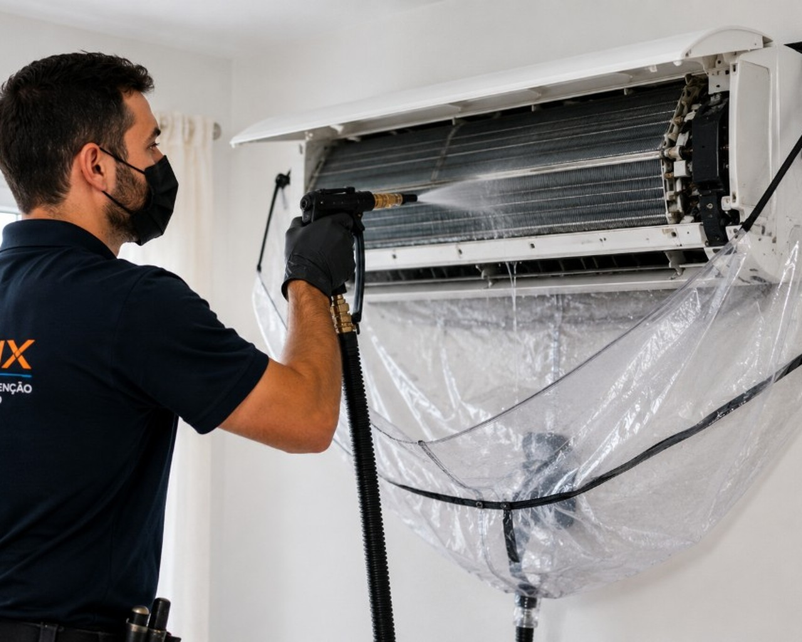

Qualquer ar condicionado acumula pó, humidade e sujidade na unidade interior. Com o tempo aparecem mau cheiro, menos frio e ar mais pesado. A AirFix faz lavagem e limpeza profunda de todo o tipo de ar condicionado — splits, casetes de teto, unidades de condutas, chão/consola, mural e portáteis — nos distritos de Lisboa e Setúbal.
Que tipos de ar condicionado limpamos
- Splits mural (mono-split e multi-split) — residencial e comercial
- Casetes de teto — lojas, escritórios, clínicas e restaurantes
- Ar condicionado de condutas (ducted) — moradias, hotéis e espaços comerciais
- Unidades de chão / consola (floor-standing)
- Portáteis — equipamentos sem instalação fixa
- Sistemas VRF / VRV para edifícios e espaços comerciais
O que inclui a lavagem
- Limpeza e lavagem de filtros, grelhas e turbina
- Higienização da unidade interior (evaporadora)
- Limpeza das serpentinas acessíveis
- Remoção de pó, humidade e sujidade acumulada
- Verificação de mau cheiro, fluxo de ar e drenagem
- Em casetes e condutas: limpeza/desmontagem de painel, grelhas e turbina
Para quem é
- Casas e apartamentos com um ou vários splits
- Lojas, escritórios, clínicas e restaurantes com casetes ou condutas
- Hotéis e alojamento local com várias unidades para higienizar
- Quem nota mau cheiro ao ligar o ar condicionado
- Equipamentos com filtros sujos ou ar mais fraco
Sinais de que o equipamento precisa de limpeza profunda
- Odor desagradável ao ligar
- Ar mais fraco ou menos frio
- Mais pó no ambiente
- Filtros visivelmente sujos
- Pingas de água na unidade interior (drenagem)
Lavar só o filtro em casa ajuda, mas não chega quando o cheiro ou a sujidade estão dentro da unidade. A limpeza profissional trata a evaporadora, a turbina e a drenagem — não apenas a grelha.
Perguntas frequentes
Limpam só splits ou também casetes e condutas?
Limpamos todo o tipo de ar condicionado: splits mural, casetes de teto, unidades de condutas (ducted), chão/consola, mural e portáteis — residencial e comercial.
Lavagem e limpeza de filtros são a mesma coisa?
Não. A limpeza de filtros retira o pó visível. A lavagem profunda higieniza a unidade interior, incluindo serpentinas, turbina e zonas onde se acumula humidade.
Fazem várias unidades no mesmo espaço?
Sim. Diga-nos quantas unidades tem, o tipo (split, casete, conduta…) e a zona, para prepararmos o orçamento.
Com que frequência limpar?
Em casa, uma limpeza profissional por ano costuma chegar. Com animais, muito pó, uso intenso no verão ou em espaços comerciais (restaurantes, clínicas, lojas) pode fazer sentido mais do que uma vez por ano.
Serve para mau cheiro?
Muitas vezes sim, quando o cheiro vem de filtros sujos ou de sujidade na unidade interior.